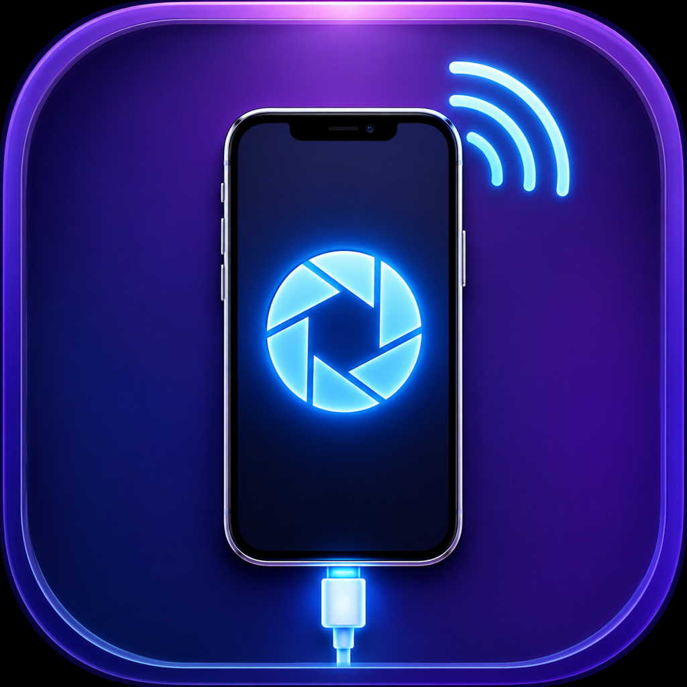
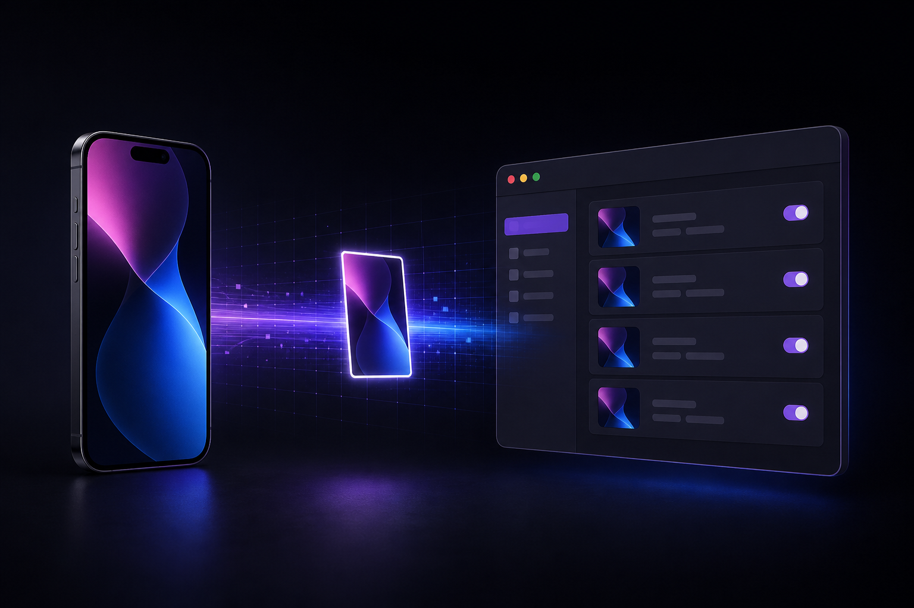
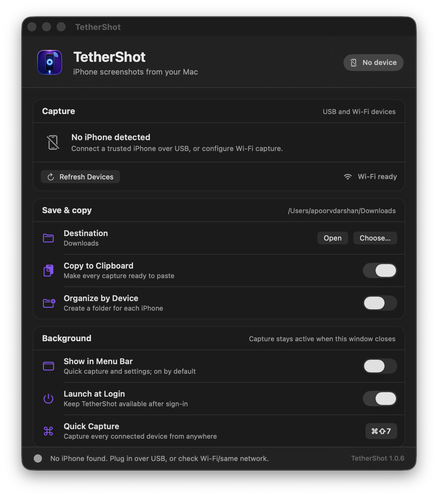

Capture your iPhone over USB or local Wi‑Fi, straight to a folder and clipboard.

Close the window and TetherShot keeps capturing quietly in the background.

No account, analytics, upload, or cloud relay. The frame moves from your phone to your Mac.